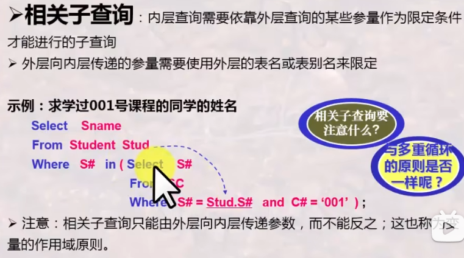
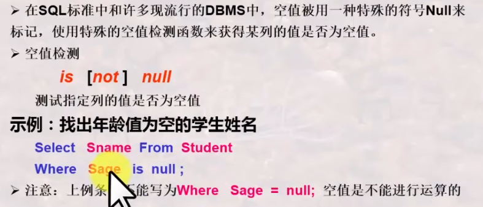
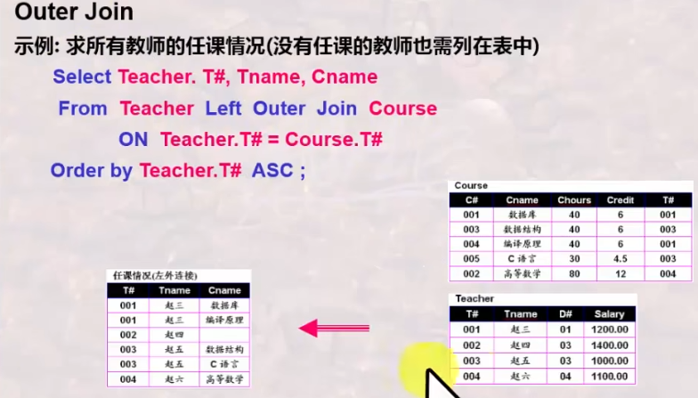
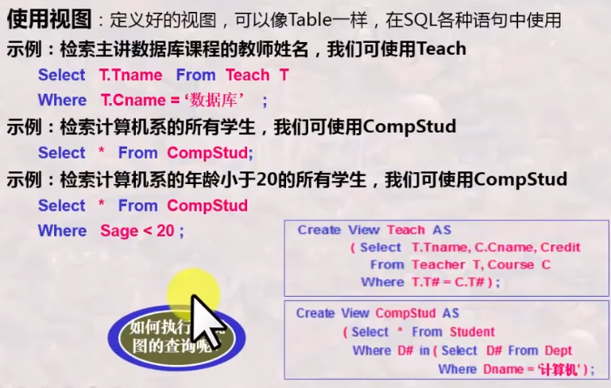

数据库系统版本1-部分2¶
学习自B站，战德臣老师的课程，仅用于个人学习，如需进行相关研究，请移步相关教程。
第七讲 数据库语言-SQL¶
基本内容：
1、SQL语言之子查询运用
2、SQL语言之结果计算与聚集函数
3、SQL语言之分组查询与分组过滤
4、利用SQL语言实现关系代数操作
5、SQL语言之视图及其应用
重点和难点
利用SQL语言表达复杂查询-（NOT）IN子查询¶
1、子查询¶
首先，为什么需要子查询？

子查询的定义：
总共三种类型的子查询：
2、IN与NOT IN谓词子查询¶
简单的语法形式：
简单示例：列出张三、王三同学的所有信息
可以有使用集合和or语法思路
为了方便，所有变量我都直接大写了，后续根据实际情况，自行判断大小写。¶
例2：列出选修了001号课程的学生的学号和姓名
例3：求既学过001号课程，又学过002号课程的学生的学号
列出没学过李明老师讲授课程的所有同学的姓名
SQL
SELECT SNAME
FROM STUDENT
WHERE SNO NOT IN (
SELECT SNO
FROM SC,COURSE C,TEACHER T
WHERE T.TNAME='李明' AND SC.CNO=C.CNO AND T.TNO=C.TNO
)
非相关子查询¶
相关子查询¶

复杂查询- Some与All子查询¶
例子：
找出工资最低的教师姓名
找出001号课程成绩不是最高的所有学生的学号
找出所有课程都不及格的学生姓名
找出001号课程成绩最高的所有学生的学号
找出98030101号同学成绩最低的课程号
SQL
SELECT CNO FROM SC
WHERE SNO='98030101' AND SCORE <= ALL (SELECT SCORE FROM SC WHERE SNO='98030101');
找出张三同学成绩最低的课程号
SQL
SELECT CNO
FROM SC,STUDENT S
WHERE SNAME='张三' AND S.SNO=SC.SNO AND SCORE <=ALL(SELECT SCORE FROM SC WHERE SNO=S.SNO);
需要注意的¶
这个地方的<>some可能找出来的结果不全，因此他是和其余两个不等价的。
复杂查询——（NOT）EXISTS子查询¶
例子：列出没学过李明老师讲授任何一门课程的所有同学的姓名。
例子2：
利用SQL语言进行结果计算与聚集计算¶
1、结果计算¶
求解有差额的任意两位教师的薪水差额，差额>0
SQL
SELECT T1.TNAME AS TR1,T2.TNAME AS TR2,T1.SALARY-T2.SALARY
FROM TEACHER T1,TEACHER T2
WHERE T1.SALARY>T2.SALARY;
依据学生年龄求学生的出生年份，当前是2024年
2、应用聚集函数进行统计计算¶
求教师的工资总额
求计算机系教师的工资总额
球数据库课程的平均成绩
分组查询 分组过滤¶
分组过滤
分组过滤示例
SQL语言实现关系代数操作¶
SQL并运算
SQL交运算
SQL差运算
空值的处理¶
相关语法和示例

现行的DBMS的空值处理小结
内连接，外连接¶

SQL语言之视图及其应用¶
SQL数据库结构¶
视图就是符合要求的数据的导出公式。
定义视图¶
使用视图¶

SQL视图更新的相关问题¶
示例：